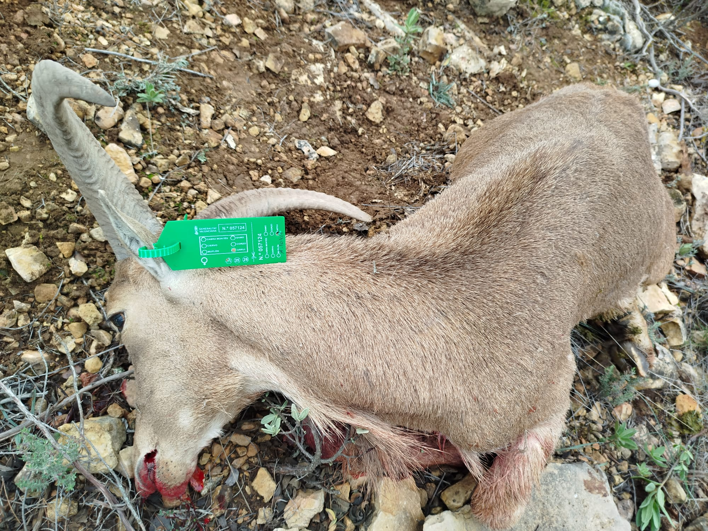
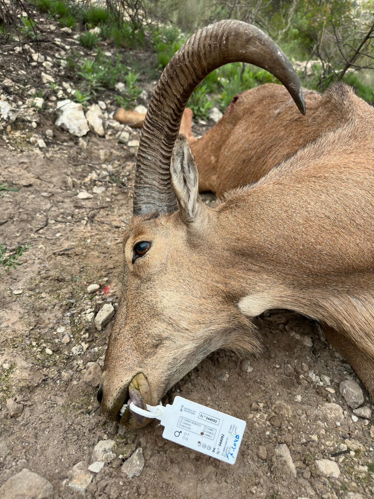

Hembra
El Ammotragus lervia es probablemente el trofeo más exigente de la península. Vive en lo más quebrado de la sierra alicantina, ve antes de ser visto y castiga cada error de aproximación.
- Nombre científico
- Ammotragus lervia
- Hábitat
- Cortados y laderas de esparto, 400–1.400 m
- Se caza
- Macho y hembra
- Trofeo representativo
- Cuerna en arco, machos representativos
- Modalidad
- Rececho a pie en terreno abierto
- Temporada
- Todo el año, según planificación de la finca